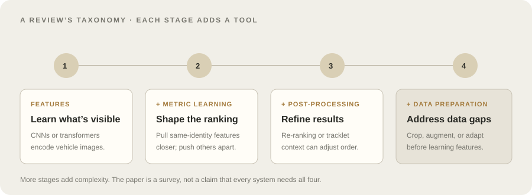

Problem
Traffic monitoring depends on connecting observations of the same vehicle across images or cameras. This is difficult for two reasons: different vehicles may look alike, and one vehicle may look different as the camera angle, lighting, distance, or obstruction changes. License plates and sensors can also fail when visibility or environmental conditions are poor.
The review treats retrieval as a ranked search: given a query vehicle image, find likely matches in a gallery. It looks at how deep-learning methods build these rankings, what benchmark datasets and measures researchers use, and why a good test-set score may not carry over to another city or camera setup.
Approach
This is a literature review, not a new model experiment. The authors say they followed PRISMA criteria, searched sources including IEEE Xplore, Scopus, Springer, and arXiv, and used terms around vehicles, identification, re-identification, and retrieval. They included English-language peer-reviewed journal and core-conference studies that validated their methods.
The review organizes methods into four families. They build on one another, but are a map of design choices rather than a mandatory recipe:
- Feature learning: a CNN or other model learns visual cues, including global appearance and local vehicle parts.
- Metric learning: a loss function shapes the feature space so images of the same vehicle are closer than images of different vehicles.
- Post-processing: re-ranking or tracklet context revises the initial candidate order after feature matching.
- Pre-processing plus the previous stages: image cleanup, super-resolution, viewpoint generation, synthetic data, or domain adaptation addresses difficult or underrepresented inputs.
It also compares common evaluation measures. Rank-k asks how often a correct vehicle appears within the first k results. Mean average precision (mAP) summarizes the precision of the ranked results across queries. The review tabulates datasets with different scales and camera coverage, including VeRi-776 (about 50,000 images, 776 vehicles, 20 cameras), VeRi-Wild (about 416,000 images, 40,671 vehicles, 174 cameras), and CityFlow (about 85,000 images, 880 vehicles, 40 cameras), using the counts reported in the paper.
Explore the method map
Add one capability at a time
Choose a stage to see what it adds to vehicle retrieval—and what extra work comes with it.
Prepare difficult data
Image cleanup, synthetic viewpoints, and domain adaptation can address missing or difficult training examples.
More preprocessing can improve coverage, but synthetic images may differ from real camera footage and adaptation adds work.
Benchmarks differ in scale and camera coverage; their scores are not directly comparable.
This is the paper’s organizing map, not a universal deployment checklist. A system only needs the stages that solve its actual data and retrieval problems.
Findings
The review’s synthesis points to a few recurring patterns. Models that combine local details with the overall vehicle appearance can be more robust than ones that rely on a small set of cues. Spatial and temporal context can help when multiple frames are available, while metric learning—especially triplet-loss approaches—and re-ranking often improve retrieval in the surveyed experiments.
The harder problem is transferring those gains. A model can perform well on a benchmark and still struggle with new cameras, changed lighting, occlusion, or a different vehicle population. Synthetic data and adaptation can help address data gaps, but introduce their own issues, including a mismatch between synthetic and real images and the work needed to label or adapt data. Benchmark scores from different datasets should not be read as a direct head-to-head comparison because their cameras, identities, and evaluation setups differ.
The paper is a survey, so it does not report a new model score or prove one design is best for every deployment. Its useful output is a way to ask what evidence a system uses, how it ranks candidates, and whether its data and evaluation resemble the conditions where it will be used.
Paper
“Deep Vision Based Vehicle Retrieval for Automated Smart Traffic Surveillance Systems,” by Shankaranarayan N. and Sowmya Kamath S. In the proceedings of the 2022 3rd International Conference on Computation, Automation and Knowledge Management (ICCAKM 2022).